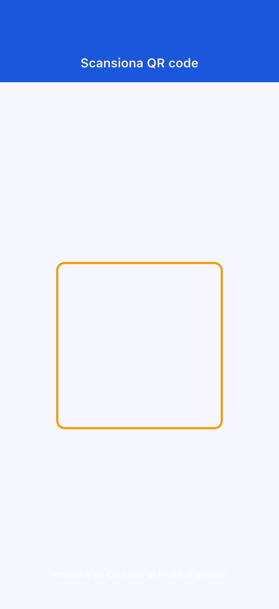
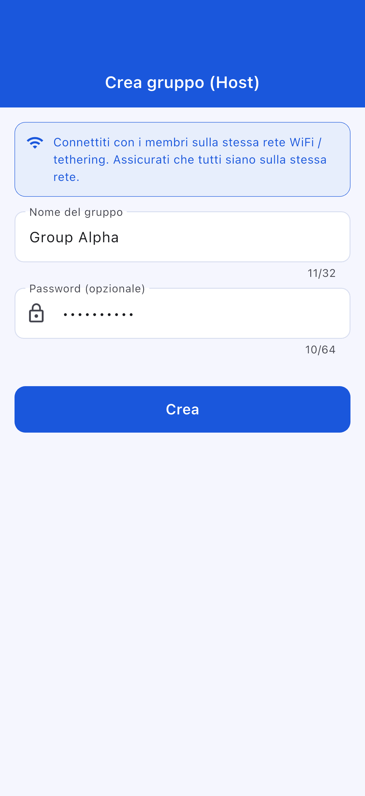
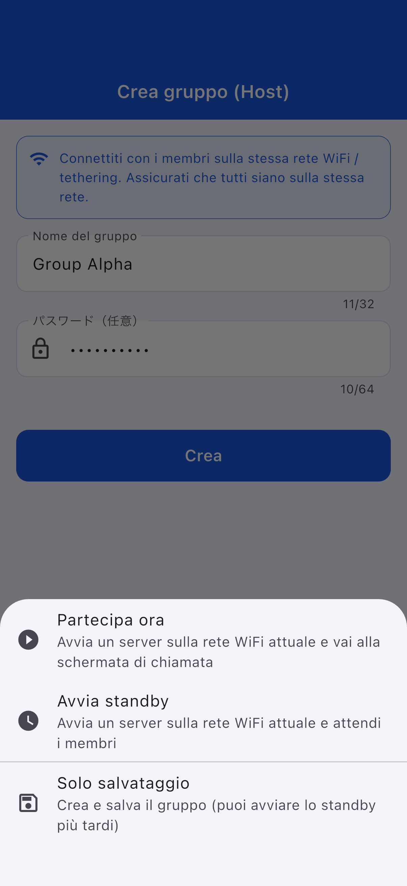
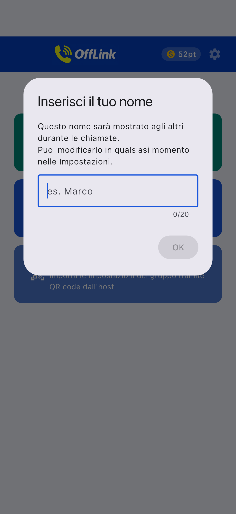
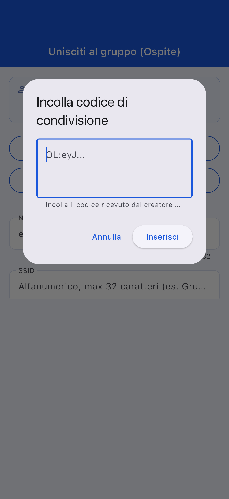
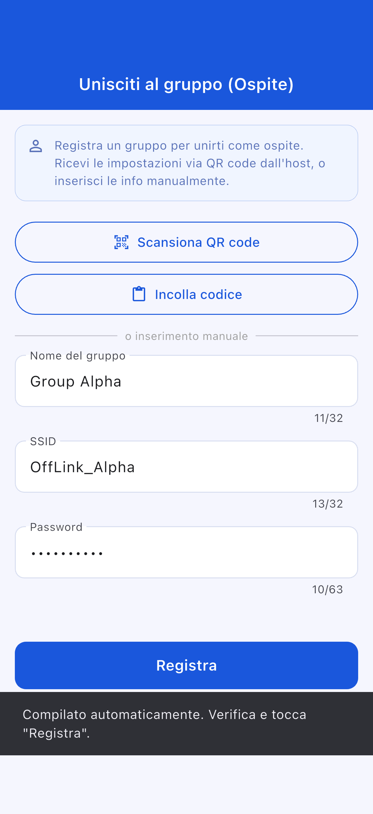
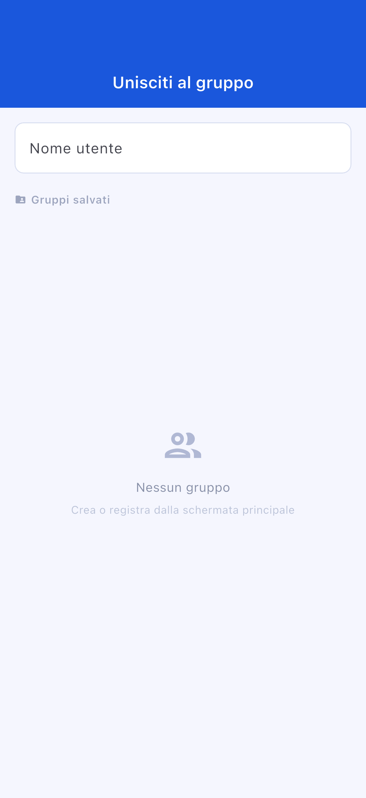
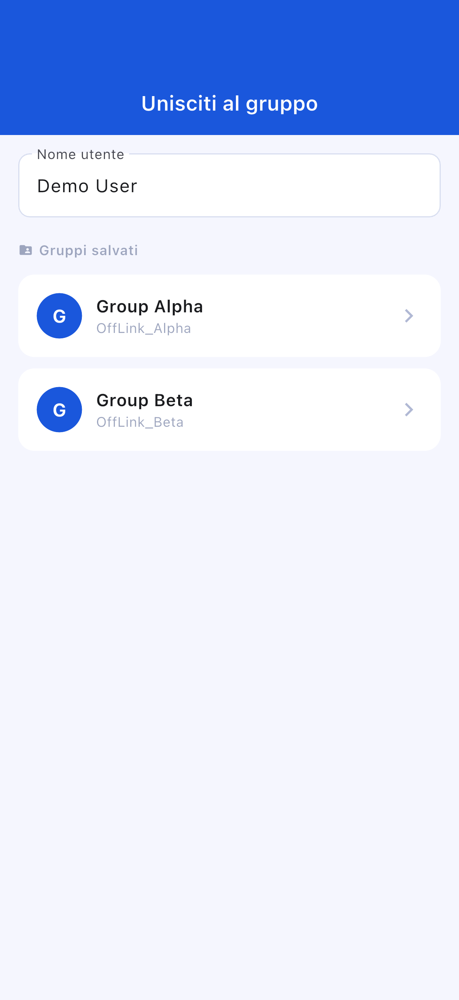
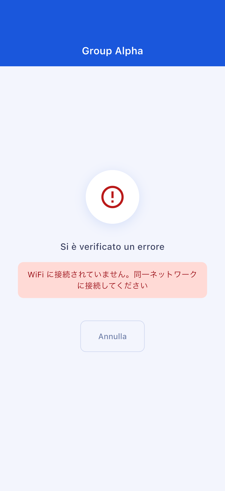
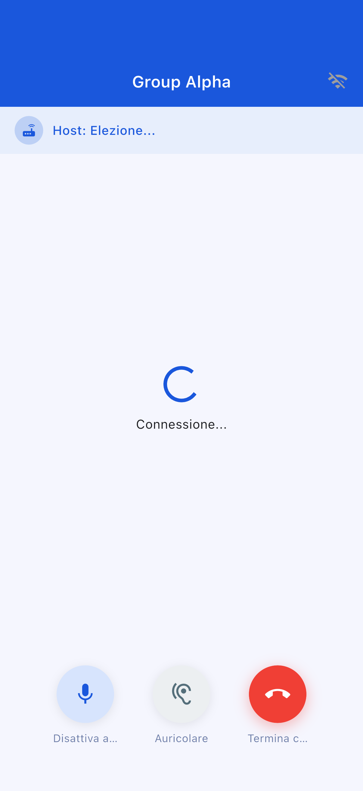

Nome dell'app: OffLink
Destinatari: Chiunque desideri effettuare chiamate vocali di gruppo all'interno della stessa rete WiFi
Data di creazione: 9 marzo 2026
Ultimo aggiornamento: 11 aprile 2026
OffLink è un'app che consente di effettuare chiamate vocali di gruppo senza connessione Internet, all'interno della stessa rete WiFi o hotspot condiviso. Grazie alla comunicazione P2P tramite WebRTC, offre chiamate vocali a bassissima latenza.
Esempi di utilizzo:
Schermata iniziale dopo l'apertura dell'app. Inizia utilizzando i tre pulsanti nella parte inferiore.
OffLink funziona in modalità WiFi LAN. Tutti i partecipanti devono essere connessi alla stessa rete WiFi. Il dispositivo host avvia un server di segnalazione e le chiamate vocali avvengono tra i dispositivi della stessa rete.
Punto chiave: Non è necessaria alcuna connessione Internet.
| Ruolo | Dispositivi compatibili | Descrizione |
|---|---|---|
| Host | Android / iPhone | Dispositivo che avvia il server di segnalazione e gestisce la chiamata |
| Ospite | Android / iPhone | Dispositivo che si unisce alla chiamata creata dall'host |
Nota: Tutti i partecipanti devono essere connessi alla stessa rete WiFi.
| Permesso | Utilizzo | Impatto in caso di rifiuto |
|---|---|---|
| Microfono | Chiamate vocali | Impossibile effettuare chiamate |
| Fotocamera | Scansione codice QR | Impossibile registrare un gruppo tramite QR |
| Dispositivi nelle vicinanze (WiFi) ※Android | Rilevamento rete WiFi | Impossibile rilevare l'host |
| Posizione ※Android | Scansione WiFi (requisito del sistema) | Impossibile ottenere il SSID WiFi |
| Bluetooth ※Android | Connessione auricolari | Impossibile utilizzare gli auricolari |
| Notifiche ※Android | Notifiche di invito alla chiamata | Nessuna notifica in background |

Se hai rifiutato un permesso per errore: vai su «Impostazioni» → «App» → «OffLink» per modificare i permessi.
Avvia una chiamata all'istante senza dover creare un gruppo in anticipo.
Passaggio 1: Tutti i partecipanti si connettono allo stesso WiFi
Passaggio 2: Tocca «Chiamata immediata» (pulsante verde)
Passaggio 3: Inserisci il tuo nome utente
Passaggio 4: Seleziona un livello e avvia la chiamata (→ 3-5. Sistema a punti)
Passaggio 5: Un invito alla chiamata viene inviato automaticamente ai membri nella stessa rete WiFi
Se esiste già un host, puoi scegliere se unirti o avviare una nuova chiamata.
Passaggio 1: Tocca «Crea come host» (pulsante blu)
Passaggio 2: Inserisci il nome del gruppo e una password (facoltativa), poi tocca «Crea»


Suggerimento: Scegli un nome di gruppo facile da identificare. Si consiglia di impostare una password.
Passaggio 3: Seleziona l'azione di creazione

| Azione | Descrizione |
|---|---|
| Unisciti ora | Avvia il server e apre la schermata di chiamata |
| Avvia in standby | Avvia il server e resta in attesa |
| Solo salvataggio | Può essere avviato successivamente |
Passaggio 1: Tocca «Unisciti come ospite» (pulsante celeste)
Passaggio 2: Scegli il metodo di adesione

| Metodo | Azione |
|---|---|
| 📱 Scansiona codice QR | Scansiona il codice QR dell'host |
| 📋 Incolla codice | Incolla il codice condiviso |
| ✏️ Inserimento manuale | Inserisci le informazioni direttamente |
Condivisione del codice QR (lato host):

Incollare il codice (lato ospite):

Passaggio 3: Una volta inserite le informazioni, tocca «Registra»


Schermata di adesione ospite:


Schermata di standby:

Schermata di chiamata:

| Pulsante | Funzione |
|---|---|
| 🎤 Disattiva audio | Attiva/disattiva il microfono |
| 🔊 Cambia uscita audio | Altoparlante / Bluetooth / Auricolare |
| 🔴 Termina chiamata | Esci dalla chiamata |
| Livello | Punti consumati | Partecipanti massimi |
|---|---|---|
| Standard | 10 pt | 4 persone |
| Large | 20 pt | 10 persone |
OffLink non dispone di una funzione di avvio automatico dell'hotspot. Attiva manualmente la condivisione della connessione.
Vai su «Impostazioni» → «App» → «OffLink» → «Autorizzazioni» per modificarle
| Elemento | Limitazione |
|---|---|
| Numero massimo di partecipanti | Standard: 4 / Large: 10 |
| Modalità di comunicazione | Solo WiFi LAN |
| Background | Limitato a seconda del modello del dispositivo |
| Limite gruppi salvati | Free: 5 / Premium: illimitato |
| Elemento | Consigliato |
|---|---|
| Android | 5.0+ (API 21+) |
| iOS | 13.0+ |
| Batteria | Consigliato almeno l'80 % |
| Spazio di archiviazione | Almeno 100 MB |
| WiFi | Router / Hotspot condiviso / WiFi portatile, ecc. |